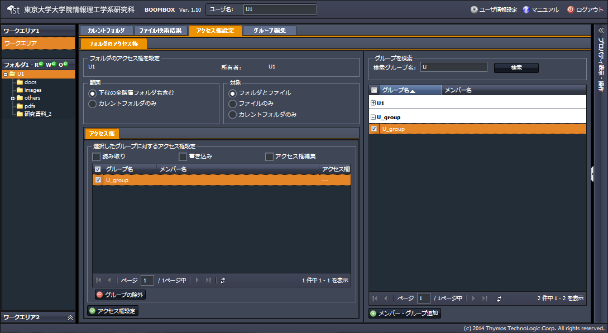

フォルダに対するアクセス権の設定、編集の手順を説明します。
他のユーザやグループとの共有フォルダを設定する場合、ホームフォルダに対して読み込み権限を与える必要があるため、共有専用のアカウントをアクティベーションして、設定する事をお勧め致します。
(1) 対象フォルダを選択し右クリックメニューを開く
『アクセス権の設定』をクリックします。
(2) 中央ペインの【アクセス権設定タブ】が開く
左側の設定画面で、アクセス権設定の範囲と対象を設定します。
＜範囲＞
・このフォルダと下位の全階層フォルダ：設定対象以下全階層
・このフォルダ：設定対象フォルダのみ
＜対象＞
・フォルダとファイル：対象フォルダ内のフォルダとファイル
・ファイル：対象フォルダ内のファイルのみ
・フォルダ：対象フォルダのみ（フォルダ内は含まない）
右側のグループ検索画面で、アクセス権を設定するユーザ、グループを検索し『メンバー・グループ追加』をクリックします。
(3) 選択したグループに対するアクセス権を設定する
選択したグループに対して、以下３つの権限を組み合わせて、必要なアクセス権を設定し、『アクセス権設定』をクリックします。設定が完了すると、選択したグループのアクセス権限欄にr、w、a が表示されます。
＜アクセス権＞
・読み取り（r）：読み取り権限 / 対象可視、ファイル開く、検索
・書き込み（w）：書き込み権限 / ファイル追加、フォルダ作成、削除
・アクセス権編集（a） /対象フォルダのアクセス権の変更権限
